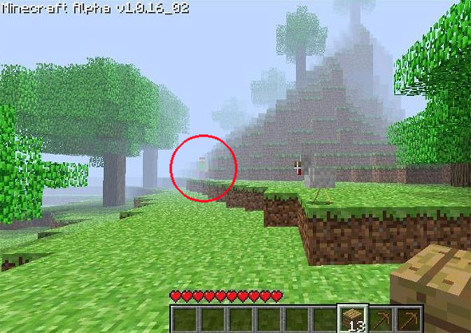
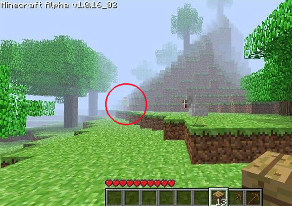

1. Minecraft
En el famoso videojuego "Minecraft", en internet se difundió un creepypasta llamado "Herobrine", que según jugadores, ha sido visto en la versión Alpha 1.0.16_02.
En esta página se hablará de temas populares sin explicación.
En el famoso videojuego "Minecraft", en internet se difundió un creepypasta llamado "Herobrine", que según jugadores, ha sido visto en la versión Alpha 1.0.16_02.
